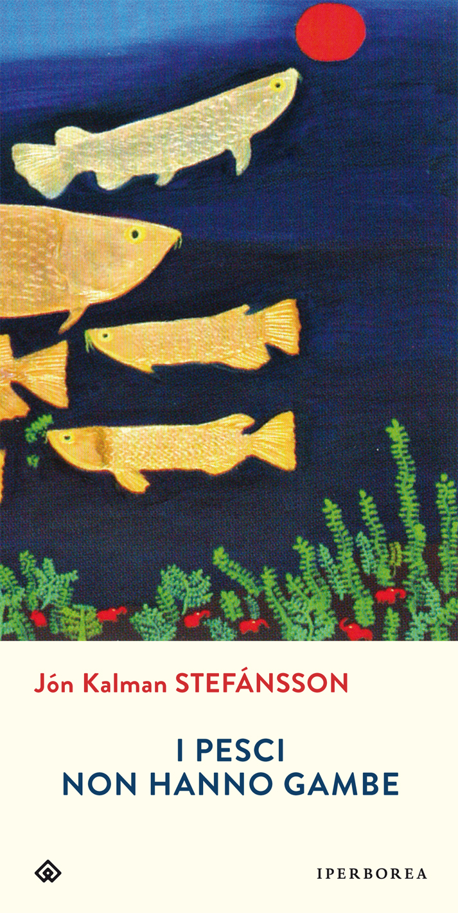
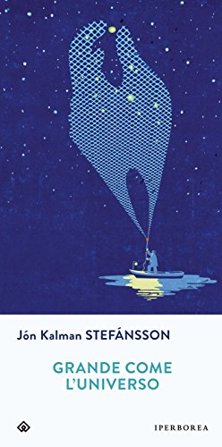

TOP LIBRI: I PIÚ CLICCATI


I pesci non hanno gambe
(recensione di Sara)
Autore: Jón Kalman Stefánsson
Editore: Iperborea
Pagine: 448
Genere: Narrativa
Anno Pubblicazione: 2016
Ho finalmente finito, dopo un lungo periodo di lettura, "I pesci non hanno gambe" di Jón Kalman Stefánsson Iperborea, un libro tanto geniale quanto pungente e oscuro.
Si, ho trovato cupo questo romanzo che racconta della vita, degli antenati di Ari che nel presente sta tornando in Islanda, il suo paese, una nazione povera, scura, fredda e dura. Ari ritorna dopo un lungo periodo passato all'estero per andare a trovare suo padre in fin di vita. Tornando in Islanda dovrà fare i conti anche con il suo passato, una ex moglie e i figli che non vede da tempo ma anche con i ricordi della sua infanzia e della sua adolescenza. Di una vita che non sembra nemmeno più la sua passata a lavorare il pesce in quell'isola sempre sottomessa e lontana dal resto del mondo.
"Voglio diventare vecchio sotto la luna e le stelle e amare ancora mia moglie con tanta passione da doverla abbracciare, e non desiderate nient'altro che vivere altri vent'anni con lei, amare ancora le sue labbra e i suoi occhi, ecco come voglio diventare, vecchio e felice nel chiaro di luna."
In un continuo andirivieni temporale scopriremo come la vita dei nonni di Ari fino ad arrivare a lui, le motivazioni di certe azioni e certi sentimenti e anche di alcune scelte. La storia non è fluida, un mero racconto, un elenco di eventi messi uno di seguito all'altro: ogni evento è uno spunto per analizzare e scoprire nel dettaglio ciò che i personaggi provano, in cui il lettore non può far altro che rispecchiarsi. L'autore è come se togliesse un velo dagli occhi di che legge dando voce a situazioni dell'esistenza per noi innominabili, a cui non riusciamo a dare un nome o a descrivere. Stefánsson penetra nel lettore, lacerando e ferendo, rivelando una profonda conoscenza del genere umano, delle sensazioni e delle emozioni della vita. Vede l'Islanda e la racconta, nella sua storia, nelle sue vittorie ma anche nelle sue sconfitte, quasi come se fosse uno dei protagonisti, il personaggio principale che dirotta e modifica le esistenze di tutti gli altri.
"Nessuno sa quali eventi meritino di essere raccontati, quali emergano splendenti o cupi dal tempo, intensi oppure fuggevoli. La rilevanza degli aventi è sempre relativa, e sempre mutevole."
Non sempre queste emozioni sono positive, anzi. Sarà per l'ambientazione, una nazione che davvero oltre all'oceano e a un minimo di allevamento non ha nessuna sussistenza e che per cui spinge i suoi abitanti a vivere in un limbo di tristezza e insoddisfazione, sempre pensando a una vita altrove, dove è più facile esistere ed essere felici. I personaggi sono raccontati in una spirale di disillusioni, di piccole sconfitte, di rapporti annientati dal tempo o dalla morte o semplicemente dallo scorrere della vita.
"Ricorda con me, che un uomo dev'essere provvisto di due cose per mantenersi abbastanza saldo sulle proprie gambe, per camminare a testa alta, per conservare lo scintillio dello sguardo, il vigore del cuore, la musica del sangue - una schiena forte e lacrime."
In generale non mi sento di condannare questo romanzo. Lo trovo davvero straordinario, una capacità di trasmettere emozioni molto alta, nessun lettore rimane lo stesso dopo aver provato la prosa quasi poetica, dolce e amara, mai superficiale o banale di Stefánsson. In questo libro ho davvero parole che mi hanno trafitta e che raramente dimenticherò.
 L'AUTORE - Jón Kalman Stefánsson (Reykjavík, 1963), ex professore e bibliotecario, è passato alla narrativa dopo tre raccolte poetiche. I suoi romanzi sono stati nominati più volte al Premio del Consiglio Nordico e pubblicati dalle più importanti case editrici europee. Luce d’estate ed è subito notte ha ricevuto nel 2005 il Premio Islandese per la Letteratura. Paradiso e inferno, primo volume della sua trilogia, è stato definito il miglior romanzo islandese degli ultimi anni.
L'AUTORE - Jón Kalman Stefánsson (Reykjavík, 1963), ex professore e bibliotecario, è passato alla narrativa dopo tre raccolte poetiche. I suoi romanzi sono stati nominati più volte al Premio del Consiglio Nordico e pubblicati dalle più importanti case editrici europee. Luce d’estate ed è subito notte ha ricevuto nel 2005 il Premio Islandese per la Letteratura. Paradiso e inferno, primo volume della sua trilogia, è stato definito il miglior romanzo islandese degli ultimi anni.Dello stesso autore su THRILLERNORD:
 IL LIBRO - Siamo in Islanda, isola solitaria, paese inospitale posto a nord del mondo e della vita. Il ghiaccio incombe bianco sulla terra piatta che ospita la cittadina di Keflavik, sviluppatasi grazie alla fiorente industria della pesca e della lavorazione del pesce...
Se siete lettori appassionati visitate questo blog
L'officina del libro